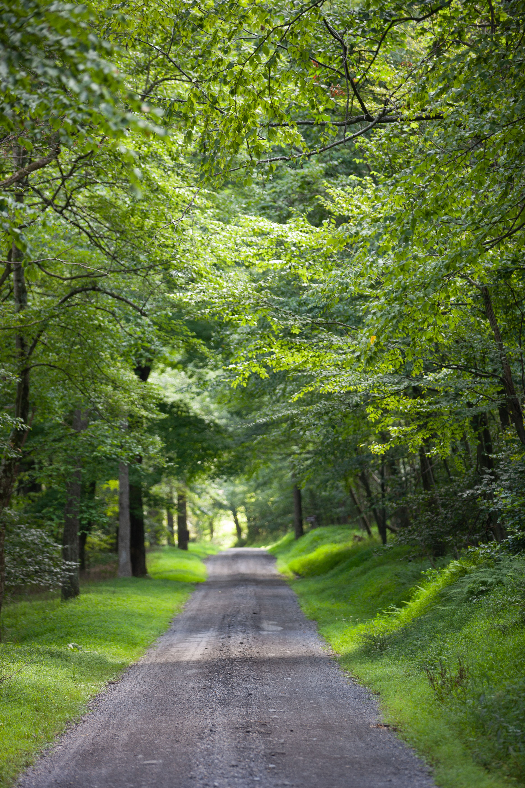

Sky
I chose these because the color of the sky and the texture of the clouds are never quite the same twice, even when I return to the same stretch of sky.


Hands
I chose these because hands often say more about a person than words do, showing the effort, care, and habit that a face or a sentence can leave out.


Road
I chose these because I like the feeling of a road that is always leading somewhere, even before I can see where it actually ends.

